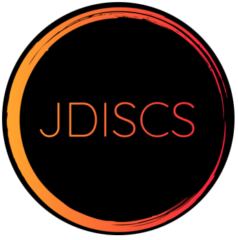
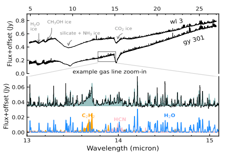
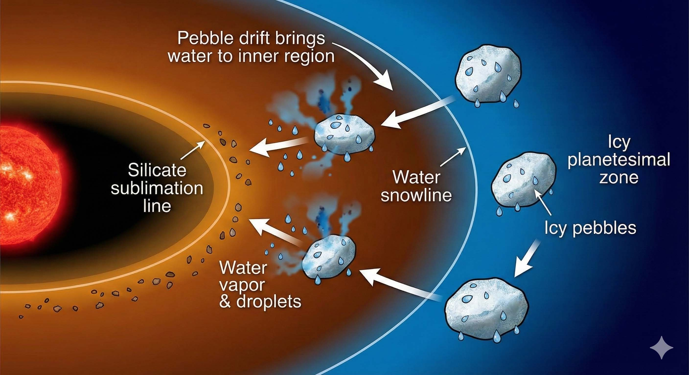

We are observers first. Decoding the physics and chemistry of planet formation using the world's most powerful facilities.
We are Principal Investigators of multiple programs on ALMA and JWST. We use interferometry to capture high-resolution images of rings, gaps, and spirals carved by newborn planets.
Using JWST and ALMA, we map the distribution of water, CO, and organic molecules to understand the chemical inventory available for forming habitable worlds.
We bridge the gap between observations and physical and chemical evolution in planet formation. We use sophisticated physical and chemical models (e.g., DALI) and radiative transfer codes (e.g., RADMC-3D) to translate photons into insights on physical and chemical processes in planet formation.
Our flagship ALMA Large Program (103 hours) answers a fundamental question: how long do planet-forming disks retain their gas? We measure gas masses and sizes across 30 disks spanning 0.1–10 Myr in three star-forming regions.
Status: 12 papers published in 2025 ApJ Focus Issue
Project Website → | Data Download →
Using JWST/MIRI mid-infrared spectroscopy, we probe the chemistry at terrestrial planet-forming zones (< 10 AU). We detect water, CO₂, and organic molecules to understand the chemical inventory available for rocky planet formation.
Status: Observations ongoing
Project Website →
Our newest JWST program (68.5 hours, approved 2025) targets the youngest planet-forming disks still embedded in their natal envelopes. We aim to understand chemistry in the first million years of planet formation.
Status: Approved, observations upcoming

How does water reach the inner disk where rocky planets form? We use molecular tracers to track the radial transport of icy pebbles and understand how disk substructures regulate volatile delivery to habitable zones.
Status: Active research